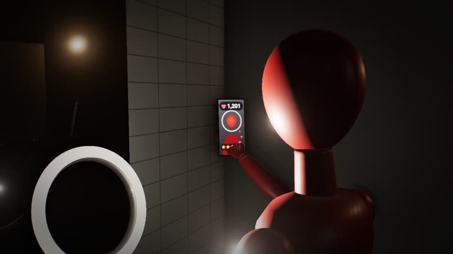
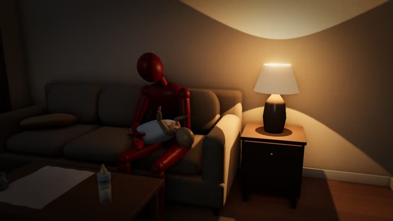

- 01Bassist Marcelo Perez Schneider faked his playing for decades, but nobody can be the best when they're up against every bassist on the planet.whatreally.is/a-
bassist- Ultimate Guitarmiming- to- a- backing- track - 02AI does work twice as fast, but the modern world never runs out of work.whatreally.is/a-
90- prnewswire.comminute- longer- workday- with- ai - 03Governments are nudging people to have babies, but nobody wants kids they'd have to raise alone.whatreally.is/nudging-
people- ifstudies.orgto- have- babies 
04Herasight scores embryos for depression risk, but whichever embryo you pick grows up in the same lonely, sleepless world that sets it off.whatreally.is/a-gene- herasight.substack.comscore- for- picking- embryos - 05Hugh Hefner kept three girlfriends and twice-weekly orgies into old age, but he was after status, and the orgies stopped once E! gave him millions of viewers.whatreally.is/group-
sex- Entertainment Weeklynights- at- the- mansion 
06Mothers go back to work while still nursing their babies, but a baby still needs its mother all day, whatever the leave policy says.whatreally.is/the-first- Reddit, r/newbornsday- back- from- maternity- leave  07Nirva sells a $200 necklace that tracks who drains you, but your gut already measures exactly that: who takes more than they give.whatreally.is/a-
07Nirva sells a $200 necklace that tracks who drains you, but your gut already measures exactly that: who takes more than they give.whatreally.is/a-necklace- Tom's Guidethat- reads- your- emotions - 08Teens are betting on sports apps, but one lucky bet pays more than two days of work, and the apps are built so it doesn't.whatreally.is/a-
high- Good Morning Americaschooler- betting- 100- dollars  09A pop star's stage split goes viral, but it makes men feel wanted and women feel outdone, and the music business cashes in on both.whatreally.is/a-
09A pop star's stage split goes viral, but it makes men feel wanted and women feel outdone, and the music business cashes in on both.whatreally.is/a-photo- of- a- split- on- stage  10One in four teens never exercises, but nobody moves for a WHO target; people move when there's somewhere real to go.whatreally.is/one-
10One in four teens never exercises, but nobody moves for a WHO target; people move when there's somewhere real to go.whatreally.is/one-in- Euronewsfour- teens- never- active
Draft pages.